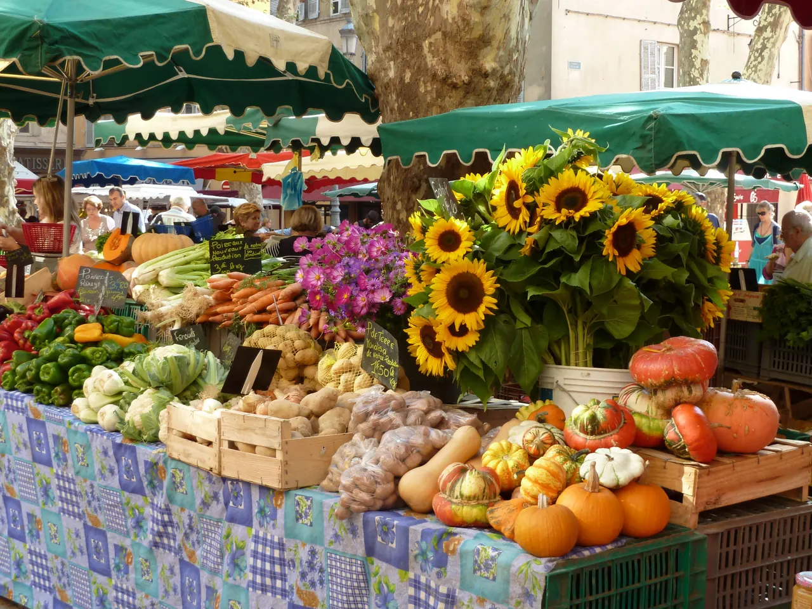

Les Halles

| 지역 | Avignon |
|---|---|
| 등급 | Must |
| 언제 | Day 20 · 9/17시간표 기준 |
| 상세 | 챕터 본문에서 보기 |
| 지도 | Avignon 실행지도 · 핀 이름 Les Halles |
참고
오프라인입니다. 위키백과와 지도 링크는 연결되면 다시 동작합니다.
아비뇽의 실내 중앙시장이다. 관광 전 아비뇽의 생활부터 보는 것이 이 날의 순서를 만든다.
교황궁보다 먼저 가라 시장은 오전에 끝나고 교황궁은 하루 종일 연다. 순서가 뒤집히면 시장을 못 본다. 그리고 거대한 권력 건축을 보기 전에 이 도시가 지금 어떻게 사는지를 보는 편이 인상이 정확해진다.
운영 요일·시간 확인 필요 — 월요일 휴장 가능성
건물 외벽부터가 안내판이다 — 광장 쪽 파사드 전체가 파트리크 블랑의 수직 정원으로 덮여 있어, 시장이 아니라 식물 벽을 보러 오는 사람도 있다. 안으로 들어가면 40여 개 상인 좌판이 한 지붕 아래 모여 있고, 프로방스 노천 시장과 달리 비가 와도, 한낮 더위에도 일정이 깨지지 않는 시장이라는 것이 이 도시 4박에서 이 시장이 맡는 역할이다.
생선·치즈·샤퀴트리 좌판 사이에 서서 먹는 굴·와인 바가 몇 곳 있어, 토요일 오전이면 장보기와 이른 점심이 자연스럽게 겹친다. 시장 안 좌판은 현금이 빠르지만 카드도 대부분 받는다. 좌판 배열이 매일 조금씩 달라지니 첫 방문에서는 한 바퀴를 다 돌고 나서 사는 것이 요령이다. 파장 무렵이면 좌판 정리와 함께 가격이 내려가는 품목도 있다. 우리 일정에서는 교황궁 입장 전의 아침 정차지라 보는 시장이 아니라 사는 시장 — 농가 대신 도시 숙소의 아침 재료를 여기서 채운다.